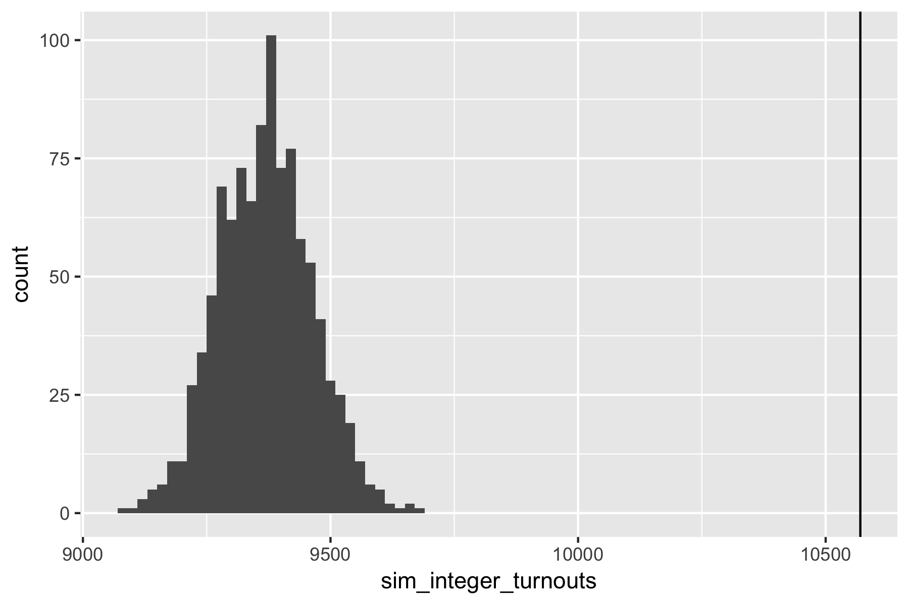

ST441/541 Welcome!
Did you get the announcement from canvas?
I’ve attached a short article (2 pages) about election fraud in Russia’s recent election. Before Thursday, please read it and be prepared to answer the following questions:
What feature of Figure 1 do the authors argue is evidence for election fraud?
For a particular year, say 2018, how do the authors measure the statistical significance of the feature in Figure 1? What statistic do they calculate? What do they compare that statistic to?
Article is circulating if you want to read/review it now.
If you bought your laptop (great!), head to https://rstudio.cloud/ and sign up for an account.
Highlights from the syllabus
Final grade = 50% Homework + 40% Project + 10% Participation
Homework: weekly due Thursday 11:59pm (midnight) starting now.
Project: more details over the coming weeks. You choose the topic. There will be deadlines throughout the quarter culminating in a written report and presentation (presentation is optional for 441 students).
Read the syllabus and ask questions Tuesday!
Russia election fraud
An example of:
- analysis using a computational rather than analytical tool
- a self-contained reproducible project
- an introduction to some common themes in the course
- the way we’ll commonly work in lecture
Getting started
- Get into groups of 3-4.
- You need one (and only one) laptop, organise yourselves so the laptop can be seen be everyone, and designate a driver.
Start by reviewing your answers to the questions:
What feature of Figure 1 do the authors argue is evidence for election fraud?
For a particular year, say 2018, how do the authors measure the statistical significance of the feature in Figure 1? What statistic do they calculate? What do they compare that statistic to?
Class Discussion Review answers and narrow focus to voter turnout in 2018.
Get the project
- Access the class workspace on RStudio cloud: http://bit.ly/st541-f18.
- Open
russia-elections project and save a copy.
- Knit
01-data-import.Rmd.
- What is reported by the polling stations?
- How is the turnout calculated from the available data?
- Compare the figures, does this data seem to match the paper?
What is reported by the polling stations?
How is the turnout calculated from the available data?
Compare the figures, does this data seem to match the paper?
Find the number of integer turnouts
Open 02-explore-analysis.Rmd
Task 1: How many polling stations reported an integer turnout in 2018?
Try with a small example first. Imagine x contains these 4 turnouts:
(x <- c(85, 85.2, 100*(((0.8 - 0.2) * 2000))/2000, 100*1562/1838))
## [1] 85.00000 85.20000 60.00000 84.98368
What should the result be? How can you calculate it with code?
Why is this hard?
Monte Carlo Approach
Find the null distribution of the test statistic by:
- simulating many datasets under the null hypothesis, and
- calculating the test statistic on each.
If observed test statistic is far from those simulated, we have evidence against the null hypothesis.
Simulate a turnout
Task 2: How would you simulate the turnout percentage for a polling station in the absence of fraud?
What distribution would you use? What would you use for its parameter values?
Simulate a turnout for the first polling station:
# A tibble: 1 x 14
turnout_percent leader_percent region tik uik voters leader
<dbl> <dbl> <chr> <chr> <int> <int> <int>
1 96.1 91.1 Республика … 1 Ады… 1 2256 1977
# ... with 7 more variables: ballots_inside <int>,
# ballots_outside <int>, ballots_early <int>, invalid <int>,
# valid <int>, given <int>, received <int>
The authors approach
Let:
- \(V_i\) be the number or people on the voter list
- \(G_i\) be the number of ballots given
To simulate the turnout percentage, \(T^\text{MC}_i\), first simulate the number of ballots given (i.e. the number of people who voted): \[
G_i^{\text{MC}} \sim \text{Binomial}(n = V_i, p = G_i/V_i)
\]
Then convert to a turnout percentage \[
T^\text{MC}_i = G_i^\text{MC}/V_i \cdot 100\%
\]
In words: simulate the number of voters as Binomial based on the number of people on the voter list and the observed turnout proportion.
Turnout % for first station:
100*(rbinom(n = 1, size = 2256, prob = 2169/2256)/2256)
## [1] 96.76418
Turnout % for all stations
with(ok_stations,
100*(rbinom(n = region, size = voters, prob = given/voters)/voters)
)
Simulate turnouts for all polling stations
Find a count of integer stations based the simulated turnout at all stations.
A larger simulation
In 03_simulation.Rmd if you are curious.

What would an alternative approach be?
Find sampling distribution of test statistic analytically
Very large sum of random variables (integer or not indicator).
Some version of Central Limit Theorem (but not the usual one, why?).
Need to work out expectations and variances for random variables.
Main themes of course:
- Computational alternatives to analytical techniques: specific algorithms commonly encountered in statistics.
- Programming for statistical computation: code that is correct, clear, and if necessary, fast.
- Best practices for computational projects: organization and workflows for projects so they are easy to reproduce, share and collaborate on.